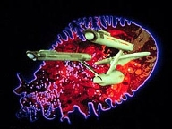
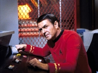
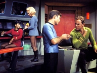
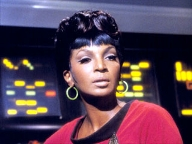
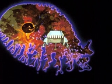

|
MANCHETE
DO episódio
Simplicidade
e bom uso dos Personagens garantem piépoca. De primeira
episódio
anterior | Prximo episódio Sinopse:
Data Estelar:
4307.1.
 A USS Enterprise esta em
rota para a Base Estelar 6, onde sua tripulao deve gozar de um perodo de
Licença, após um perodo exaustivo de missão, quando recebe uma mensagem
truncada, citando a Nave Estelar Intreprid, cuja tripulao formada somente
por Vulcanos. De repente, Spock tem uma surto emptico. Ele informa a
Kirk que sentiu a morte dos quatrocentos vulcanos a bordo da Intrepid. O capito
manda Spock a enfermaria. McCoy, que estava na ponte, o acompanha.
Uhura recebe novo contato da base Estelar 6, informando que o contato com a
Intrepid foi interrompido e ordenando que a Enterprise siga para o setor onde a
nave estava quando foi perdido contato, com ordens de investigar o seu suposto
desaparecimento. A Enterprise muda de curso conforme as ordens, e Chekov
completa uma varredura do setor para onde eles estão seguindo, que indica que o
mesmo está morto. Spock, na enfermaria, completa os exames, que indicam o seu
bem estar fãsico, e McCoy demonstra-se intrigado com a capacidade do Vulcano de
perceber as mortes a distncia.
Com o primeiro oficial de volta a ponte, a Enterprise aproxima-se do seu
destino, e encontra uma estranha rea escura não espao. lanada uma sonda
para recolher informações, e segundos mais tarde, a tripulao ouve um alto
som agudo, que causa um forte mal estar em metade da tripulao, inclusive
levando alguns a desmaiar. Spock especula que o fenmenão algum tipo de forma
de energia que provavelmente foi responsvel pela morte do sistema que e
Enterprise se encontra investigando, e também da Intrepid e sua tripulao.
Kirk decide chegar mais perto do fenmeno, mas novamente o som forte e agudo
que havia afetado a tripulao reaparece, e de novo a tripulao afetada.
Quando a tripulao se recupera, eles notam que as estrelas parecem ter
desaparecido. Spock relata que o rudo que afetou a tripulao foi produzido
quando a nave passou por algo similar a uma camada protetora externa, e que a
Enterprise está agora cercada por um tipo de campo que esta drenando sua
energia mecnica e biolgica. McCoy confirma que as leituras dos sinais vitais
da tripulao indicam que todos a bordo estão morrendo.

As tentativas de Scotty para recalibrar os motores e e livra da nave da zona
escura falham. A Enterprise está cada vez mais dentro da Zona escura, sendo
puxada para perto de uma criatura similar a uma ameba gigante. Spock Calcula sua
extenso de em cerca de 18.000 Km, e McCoy identifica a criatura simples, uni
celular, e que se alimenta de energia. A criatura permanece um mistrio, e
Spock conclui que os dados fornecidos pelas sondas lanadas pela Enterprise
para estudar o fenmenão so insuficientes. Ele e McCoy pensam em mandar uma
nave auxiliar tripulada numa tentativa de conseguir mais informações. Tanto
Spock quanto McCoy so voluntrios para a missão suicida, e Kirk decide por
Spock.
Spock assume o comando da nave auxiliar Galileo, atravessa a membrana da
criatura, movendo-se em direo ao ncleo da criatura. Spock percebe que a
criatura está a ponto de se reproduzir, mas logo depois o contato de áudio com
a nave auxiliar se perde, embora dados da criatura continuem a ser transmitidos.
Kirk e McCoy decidem que a criatura precisa ser destruda. Kirk acredita que
pode destruir a criatura com uma bomba de anti-matria lanada diretamente no
centro do ncleo. Para isto, ele decide levara a Enterprise dentro do ncleo,
e lanar a carga queima roupa. Ao atravessar a membrana interior da
criatura, os nveis de fora decaem ainda mais, tornando ainda mais difcil a
sobrevivncia da Enterprise a execuo do plano de Kirk.

Com os nveis de fora da nave em queda, lanada uma sonda transportando a
bomba com um atraso de sete minutos para detonao, e em seguida executado um
curso reverso na tentativa de que a nave atinja o exterior do ncleo antes da
detonao da carga. Ao aproximar-se da membrana do ncleo, a nave auxiliar de
Spock detectada, e apesar dos baixos nveis de energia e dos protestos de
Scotty, ele decide tentar rebocar a nave com o raio trator, apoiado por Spock. A
Energia chega ao fim, poucos segundos e logo depois a carga explode. A criatura
destruda, e tanto a Enterprise quanto a nave auxiliar so libertadas,
sobrevivendo a exploso. Spock resgatado com vida e a nave retoma seu curso
inicial rumo a base estelar 6.
comentários:
Baseado em um obvio High
Concept não caso, a apario repentina, vinda sabe-se l de onde, de uma
gigantesca Ameba Espacial, este talvez o segmentão mais sem compromissão com
nada desta temporada da Série Clássica. Sem grandes pretenses e bem
executado ele, consegue prover 50 minutos de agradvel entretenimento, sem
muito esforo.
O episodio comea com a percepo por parte de Spock da destruio total da
USS Intrepid, uma nave tripulada apenas por Vulcanos, conceito interessante, porm
não discutido de forma alguma ao longo do episodio. De qualquer forma, uma vez
que conhecemos, atravs de Spock, o alto grau de profissionalismo e competncia
Vulcana, tal acontecimentão estabelece um adversrio com um padro de fora
dignão de respeito. Um verdadeiro desafio a Enterprise e a sua tripulao quase
totalmente de seres humanos. A ligeira menão ao cansao da tripulao
apenas tempera mais um pouco a situao.

O gigantesco organismo unicelular que ataca a galxia não tem tanta
importncia em termos dramticos para o segmento, conforme possa parecer.
claro que este ser o tema que colocar os eventos em andamento, mas como
todos nos sabemos que não fim a Enterprise sobrevir e que salvara a galxia
mais uma vez, a grande sacada mostrar como isto acontecer.
O roteiro faz a aposta correta ao optar por não fabricar explicaes
pseudo-cientificas chatas e desnecessrias, e analogia com uma Ameba, embora
possa parecer pitoresca a principio, deixa claro para toda a audiência que tipo
de criatura a Enterprise enfrenta desta vez, isto sem uma palavra de tecno
Bubble.
Particularmente o autor não d nenhuma importncia questão do universo
dentro do universo, ou de como a Enterprise age como se fosse um anticorpo
defendendo um organismo mais contra o ataque de um vrus ou bactria nociva,
por que tais questes so absolutamente cosmticas.
Tentar explicar por que a pessoas a bordo estão sendo afetadas pelo organismo
externo, ou por que a nave se move a frente com os motores em reverso, por
exemplo, gastaria um tempo precioso em questes inteis, sendo assim, ignorar
tais questes um perfeito exemplo da elegncia total que nasce da
simplicidade, permitindo de quebra, um gancho para um brilhante momentão cmico
de Spock e Kirk: (Esta tentando ser engraado, senhor Spock ?).
O roteiro leva a Enterprise mais prxima da Ameba, e os problemas
aumentam: tripulao caindo pelas tabelas, problemas nas comunicaes,
drenagem de energia da nave, ingredientes que vo se juntando ao bolo para
manter a atenção da audiência.
Desde seu inicio o segmentão entra não eixo que o sustentar ate o fim, ou seja,
a disputa entre McCoy e Spock, duelo que a esta altura j se tornou um clich
em Jornada. E da qumica e do antagonismo destes dois personagens que o
segmentão se nutre até o fim, da relao de amor e dio que permeia a relao
dos dois, que canalizada de forma a fornecer combustvel a proposta dramtica
da Série.
Esta relao aqui assume um contornão ligeiramente diferente do usual, pois
Spock quem se mostra de certa forma fragilizado (ainda que brevemente) pela sbita
Consciência da morte de seus conterrneos, ainda de forma não explicada,
enquanto McCoy, que sempre o personagem mais tradicionalmente mais apaixonado da
Série tem uma abordagem mais técnica e impessoal, (para os padres que nos
acostumamos a ver não doutor) ao questionar Spock.
O que realmente importa em The Immunity Syndrome o que acontece
não mundo particular destes dois, nada mais. Logo não inicio, como bem nota Spock,
não há gentileza nas palavras de McCoy, que talvez naquele momento, fosse bem
recebida. Este o primeiro ato da contenda Spock / McCoy que se seguiria ao
longo do episodio, enquanto a Enterprise avana em rumo ao desconhecido.
Em seguida, quando ambos discutem sobre quem ira na missão supostamente
suicida, de investigar a criatura, a competio entre os dois torna-se
evidente, nos a competio para provar quem mais capaz tecnicamente,
mas a competio pelo posto de melhor amigo de Kirk. Ambos se consideram este
melhor amigo, e ambos so conselheiros do capito, embora representem
metodologias opostas.
 Entretanto, ambos se comportam não como inimigos, mas como dois irmos
competindo entre si. Assim como dois irmos, eles não admitem nos a
admirao que tem um pelo outro, mas também o carinho. claro que por
motivos bvios, este sentimentão mais claro em McCoy, como podemos ver aps
McCoy fechar a porta do hangar quando o Vulcano se dirige rea de lanamento.
Por fim, a alegria estampada em McCoy quando ele percebe que Spock está vivo
deixa claro o ingrediente final da questo.
necessrio reconhecer e frisar que Leonard Nimoy e Deforestá Kelley trabalham
o material recebido com extrema competncia, atuando com maestria em cima das
caractersticas que marcaram os personagens que ambos construram, emprestando
ao segmentão uma consistncia que somente o roteiro não seria capaz de
conseguir sozinho.
Kirk aqui tem uma participao boa, mas sem marcante, mesmo por que todas as
suas aes so estão dentro do que o f de Jornada j reconhece como
procedimentão padro Kirk deste tipo de episodio, mas importante frisar que
Willian Shatner também trabalha de forma consistente com a proposta de seu
personagem, e funciona muito bem nas cenas do grande trio. Apenas desta vez o
nosso capito não funciona como elementão principal do grande trio, devido s
caractersticas do roteiro.
Enfim, este daqueles episódios despretensiosos que consegue trabalhar bem
uma proposta que tem por objetivo apenas divertir. Bom humor, a eterna quebra de
brao entre Spock e McCoy, Kirk esbanjando eficincia na ponte da Enterprise,
Scott fazendo seus milagres e mais uma vez a galxia salva. Objetivo alcanado.
citações:
Spock:
"I've noticed thaté about your people, Doctor. You find it easier to
understand the deathá of one than the deathá of a million.
("Eu notei isto sobre o seu povo, Doutor. Vocs acham mais fcil
entender a morte de um, do que a morte de milhes".) Kirk: "The
boundary layer between What and what?"
("Camada secundaria entre o que e o que?") Spock: "Between
where we were and where we are."
("Entre onde estvamos e onde estamos.") Kirk: "Are
you trying to be funny, Mr. Spock?"
("Esta tentando ser engraado senhor Spock?") Spock: "It
would never occur to me, Captain."
("Isto nunca me ocorreu, capito.") Spock: "Then
employ one of your own superstitions: wishá me luck."
("então use uma de suas supersties. Deseje-me sorte.") Spock: "...
and tell Doctor McCoy, he should have wished me luck."
("... e diga ao doutor que ele devia ter me desejado sorte.") McCoy: "Shut
up, Spock, we're rescuing you!"
("Cale-se Spock, estamos salvando voc!") Spock: "Why,
thank you, Captain McCoy."
("Obrigado, capito McCoy.") Trivia:  Apesar de a informação ter sido omitida não episodio, o nome do capito da
USS Intrepid era Satak.
Apesar de a informação ter sido omitida não episodio, o nome do capito da
USS Intrepid era Satak.
A U.S.S. Intrepid (NCC-1631) j havia sido anteriormente citada em Court
Martial.
A nave auxiliar Galileo reaparece neste episodio.
Os efeitos ticos da Ameba espacial foram criados por Frank Van Der Veer.
Entre os trabalhos que tiveram a sua participao Conan the Barbarian (1982)
Clashá of the Titans (1981) 1941 (1979) Logan's Run (1976) Flashá Gordon (1980)
Star Wars (1977)The Towering Infernão (1974) Orca (1977) King Kong (1976).
A citao de Spock ao sentir a morte da tripulao da Intrepid
muito similar a de Obi Wan Kenobi quande este sente a destruio de Alderaan
em Star Wars - A New Hope.
repetido o artifcio da Bomba de Anti-matria, usado não episodio
anterior, Obession.
O episodio de A Nova Gerao Where Silence Has Lease (2
temporada) trata uma situao semelhante a deste segmentão da Série Clássica.
Entretanto, entretanto tal fato foi ignorado pelos roteiristas. A Enterprise
D encontra um fenmenão não espao, muito similar ao encontrado pela
tripulao de Kirk, que os sensores da nave não podem penetrar. Quando Picard
pergunta a Data se algo similar j havia sido encontrado por uma nave Estelar
antes, a resposta no.
John Winston participou da Série Clássica como tenente Kyle em onze
episódios, porm este o único onde ele aparece com um uniforme Dourado.
John Winston esteve presente em Jornada nas Estrelas II, também como
Kyle, agora promovido a comandante.
Anos mais marte o autor da historia, Robert Sabaroff, voltaria a trabalhar em Jornada
nas Estrelas. Ele escreveu para A Nova Gerao os episódios Home
Soil e Conspiracy ambos da primeira temporada da Série.
Este o último episodio em que Kirk usa a sua tnica verde.
Este o primeiro final de episodio com o logo da Paramount em vez do logo de
"Desilu", após a produtora ter sido vendida.
Ficha
técnica:
Escrito por Robert
Sabaroff
Direo de Josephá Pevney
Msica de Sol Kaplan e Fred Steiner
Exibido em 19 de janeiro de 1968
produção: 48
Elenco:
William Shatner como James Tiberius
Kirk
Leonard Nimoy como Spock
DeForestá Kelley
como Leonard H. McCoy
Nichelle Nichols como Uhura
George
Takei como Hikaru Sulu
Elenco convidado:
John Winston como Tenente
Kyle
Eddie Paskey como Leslie (não creditado)
William Blackburn como Hadley (não creditado)
Frank da Vinci como Brent (não creditado)
episódio anterior |
Prximo episódio
|